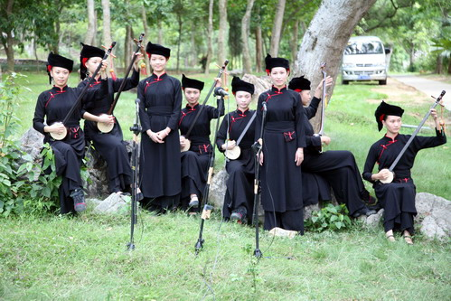
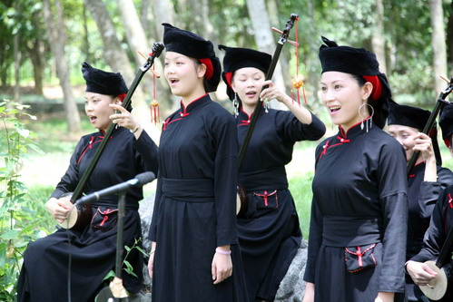
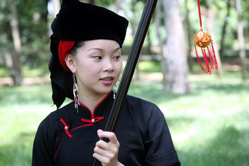
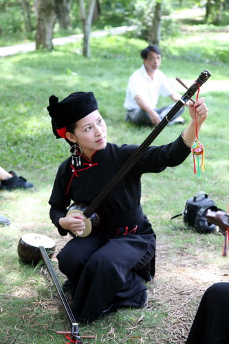
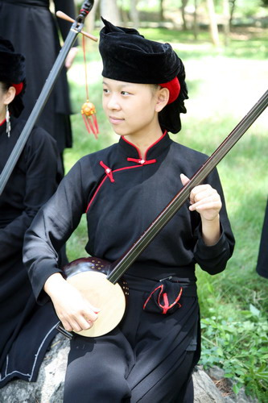
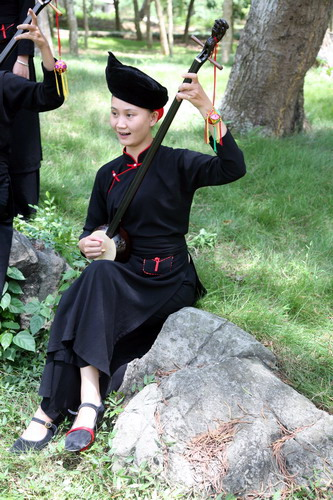
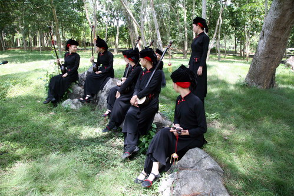
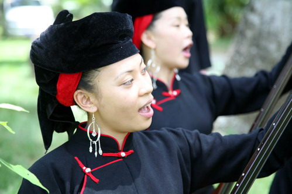
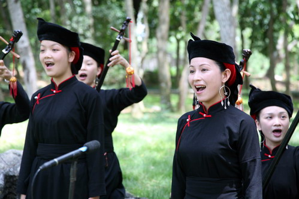

龙州美女村与天琴组合的故事
天琴，是壮族三大乐器中最古老的乐器之一，已有上千年历史，壮话称为“鼎叮”，用葫芦制作，由琴筒、琴杆、琴轴、琴弦、琴马等部件组成，音域宽，音色清亮、圆润、甜美悦耳。它是广西龙州、宁明、凭祥、防城巷一带壮民进行祭祀、说唱及日常文化娱乐活动必不可少的乐器。
龙州是一个人杰地灵的地方，金龙镇有一个闻名遐迩的美女村，因为这里山清水秀，多出美女，故而得名。“天琴”这古老的民族乐器，就是从金龙美女村挖掘出来的。至今，村里凡是有红白喜事都要弹奏“天琴”来表达心中的喜怒哀乐。村中的年轻人同样喜爱拨弄“天琴”，特别是一些年轻女子，更是喜爱弹奏“天琴”来表达心底中暗藏的情爱。
2003年9月，龙州县委县政府成立了挖掘和打造龙州壮族文化品牌领导小组，由宣传文化部门制定具体实施方案，邀请著名民族音乐家范西姆、梁绍武、农锋、韩醒等人到龙州采风，打造一支专业龙州天琴女子弹唱组合。
2003年11月8日，在南宁国际民歌艺术节“东南亚风情夜”晚会上，龙州天琴女子弹唱组合，手抱天琴，脚摇铃铛，边弹边唱，一首天琴弹唱《唱天谣》唱响了流传千年的古老歌谣音乐。铃声与琴声合鸣，美人和古琴合一，营造出纯正美妙的“天、地、人”合一的意境。在充满着山味、野味、壮味和优美、动听、悦耳的音乐声中，将美丽的龙州壮乡山美、水美、歌美、人美和浓郁的民族风情带给观众，赢得了观众阵阵喝彩。随后龙州天琴组合一路唱到了北京，唱响了中国。








